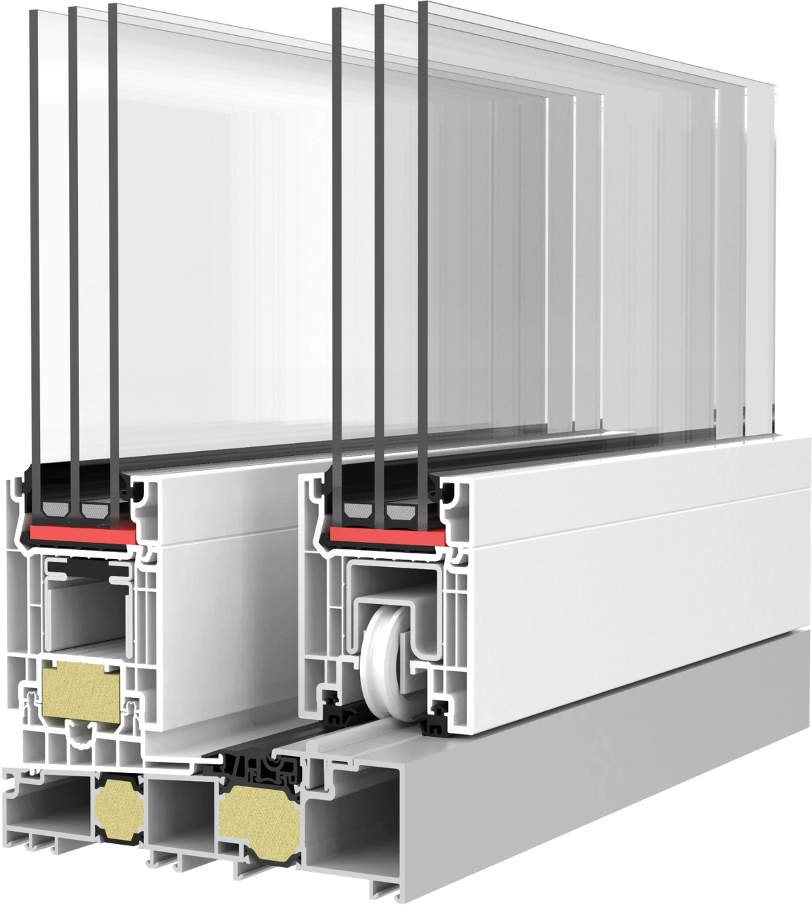

Neu im LinkedIn-Newsletter
QuinLine® 74 Edge
Geradlinig bis ins Detail.

Die neue QuinLine® 74 Edge verbindet einen schmalen, eckigen Flügelüberschlag und kantige Glasleisten mit der bewährten Technik der QuinLine® 74.
- Kantige Glasleisten
- Glasdicken bis 50 mm
- Schmaler Flügelüberschlag, 25 mm
Alle Details im Newsletter